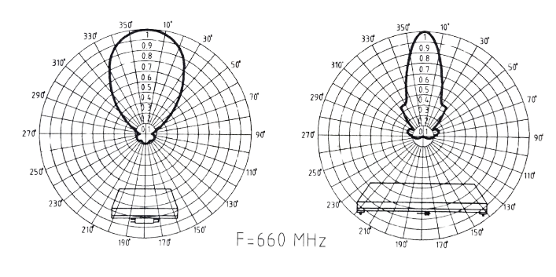

Aydın Grup Mühendislik
Mühendislik · Telekomünikasyon · Yayın Sistemleri
Engineering · Telecommunications · Broadcasting Systems · Est. 1989
Engineering · Telecommunications · Broadcasting Systems · Est. 1989
The firm was founded in the late 1980s by Aydın Özoğlu (METU Electrical-Electronics Engineering, 1984) as Aydın Mühendislik, headquartered in Gölbaşı, Ankara, with an İstanbul branch in Kadıköy. The firm’s principal commercial activity ran through the 1990s, building broadcasting infrastructure for the rapid expansion of Turkish private television and radio during that decade in parallel with state-network work for the PTT.
"The field of activities of Aydın Grup are electronics, telecommunications and FM&TV Broadcasting Transmitters." Primary technical brochure, c. late 1990s — verbatim, English page
The firm’s documented operations covered radio and television broadcasting systems at varying output power (compliant with TGM and RTÜK standards); satellite antennas, coaxial cables, accessories, connectors, and electron tubes for importation and sale; VHF and UHF radio and television antennas, including in-house design and manufacturing of antenna splitters; FM radio and television antenna tower configuration design and complete antenna system installation; FM and TV station project execution, including measurement, on-air commissioning, and modifications to existing stations per RTÜK and TGM standards; and GSM base station and communications electronics system installation.
Turkey representations held by the firm during its active period (per company profile, late 1990s brochure):
RF cables and connectors, microwave transmission lines, high-performance microwave antennas, satellite communication antennas, tunnel-comms radiating cable systems.
High-power TV transmitters and microprocessor-controlled transmitter networks. Equipment backbone of the firm's PTT national-network deployments.
Solid-state low-power and tube high-power TV transmitters, drivers, broadcast test and measurement equipment, Digital Audio Broadcasting (DAB) systems.
FM transmitter line — CTE 250 W, CTE 1 kW, CTE 5 kW. Used to commission Show Radyo, TGRT FM, Süper FM, Olay FM and numerous regional FM stations.
The firm’s principal in-house engineered product was a four-dipole UHF television transmitter antenna covering the full broadcast spectrum (470–860 MHz, Channels 21–69). Aluminum radiator elements were enclosed in a polyester radome protecting against rain and ice loading; the assembly mounted directly to round or square steel masts via integrated clamps. Connector options were selectable per customer requirement, with horizontal or vertical polarization configurations available.

F = 660 MHz — vertical / horizontal polarization.| Project | Description | Client | Equipment |
|---|---|---|---|
| Show TV | National private TV network | Turn-key | R&S / PLISCH |
| Cine 5 | National private TV network | Turn-key | R&S / PLISCH |
| TGRT | National private TV network | Turn-key | R&S / PLISCH |
| Show Radyo | FM radio network | Turn-key | CTE |
| TGRT FM | FM radio network | Turn-key | CTE |
| Süper FM | FM radio network | Turn-key | CTE |
| Olay FM | FM radio network | Turn-key | CTE |
| TV-4 project | 7 × 20 kW UHF TV transmitters · 1-yr maintenance | PTT | R&S |
| PTT FM fleet | 86 units (71 + 15) · multi-year maintenance | PTT | R&S |
| PTT TVRO | 6 × 6 m satellite antennas | PTT | — |
| Çamlıca | 100 m self-supporting tower + TV/FM antenna system | Structural | — |
| TGART | 27 × FM/TV units (250 W · 8 kW EIA 7/8 · other) | TGART | — |
| Various | ≈ 72 × 1 kW TX installations | — | — |
| Andrew line | Coaxial transmission supply across project scales | Various | Andrew |
| ≈ 500 FM and TV broadcasting stations deployed across Turkey · governmental and private operators · primary-source aggregate figure | |||
Original technical brochure plates, c. late 1990s, bilingual Turkish / English. The corporate record below precedes the firm’s digital presence and is reproduced here as the primary documentary source.
 Pl. 01Brochure cover — Aydın Mühendislik wordmark over steel tower
Pl. 01Brochure cover — Aydın Mühendislik wordmark over steel tower
 Pl. 02Cover variant — corporate headquarters facade
Pl. 02Cover variant — corporate headquarters facade
 Pl. 03Inside montage — R&S equipment, vacuum tube, tower
Pl. 03Inside montage — R&S equipment, vacuum tube, tower
 Pl. 04Company profile spread — scope statement + R&S systems
Pl. 04Company profile spread — scope statement + R&S systems
 Pl. 05Turn-key FM / TV station reference page + project ledger
Pl. 05Turn-key FM / TV station reference page + project ledger
 Pl. 06Andrew — cables, microwave, tunnel comms, satellite antennas
Pl. 06Andrew — cables, microwave, tunnel comms, satellite antennas
 Pl. 07CTE — 250 W / 1 kW / 5 kW FM transmitters
Pl. 07CTE — 250 W / 1 kW / 5 kW FM transmitters
 Pl. 08PLISCH — TV transmitters + corporate address block
Pl. 08PLISCH — TV transmitters + corporate address block
 Pl. 094 DUA2 UHF antenna — description and field photo
Pl. 094 DUA2 UHF antenna — description and field photo
 Pl. 104 DUA2 specification sheet + polar pattern
Pl. 104 DUA2 specification sheet + polar pattern